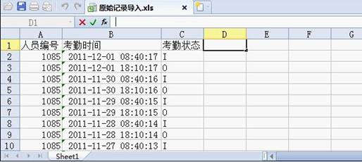

原始记录表：显示所有员工的考勤记录，包含考勤机上传以及补签卡的考勤记录。
点击【考勤】-【原始记录表】，默认主界面显示所有人员包含补签卡信息的考勤情况列表。原始记录表显示有考勤记录的人员的考勤信息。
导入U盘考勤记录：将用户从设备下载到U盘内的数据，导入到考勤系统中。
自定义导入记录：
1、点击【考勤】-【原始记录表】-【自定义导入记录】，进入如下图所示页面：
2、单击【选择文件】，在弹出的文件选择窗口中，选择文件，然后单击【打开】或双击选中文件。
注意：
（1）、导入模板需要表头，即文件中的每一列必须有列名。
（2）、“人员编号”，“考勤时间”是必选字段，其他字段是可选的。
（3）、考勤日期的格式为YYYY-MM-DD HH:MM:SS，如2011-01-01 01:01:01，在Excel表格中该字段应该为文本格式。
（4）、考勤状态使用代号表示：“I”表示上班签到，“O”表示下班签退，“2”表示外出，“3”表示外出返回，“4”表示加班签到，“5”表示加班签退，“8”表示就餐开始，“9”表示就餐结束，“255”表示未设置状态
如下图所示：
